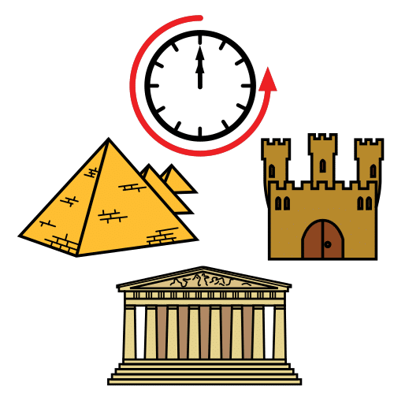
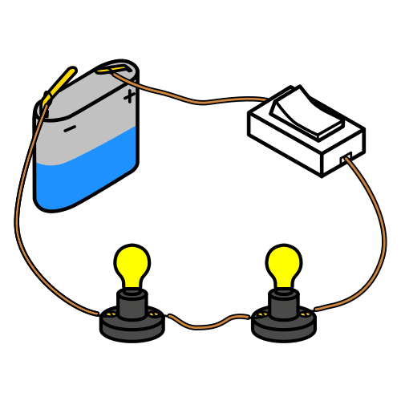
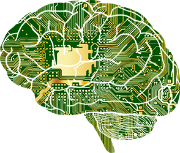
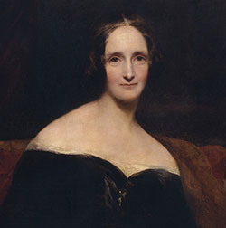
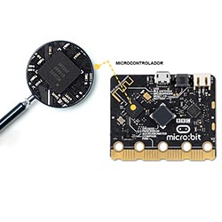
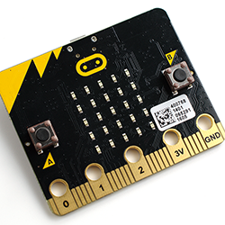
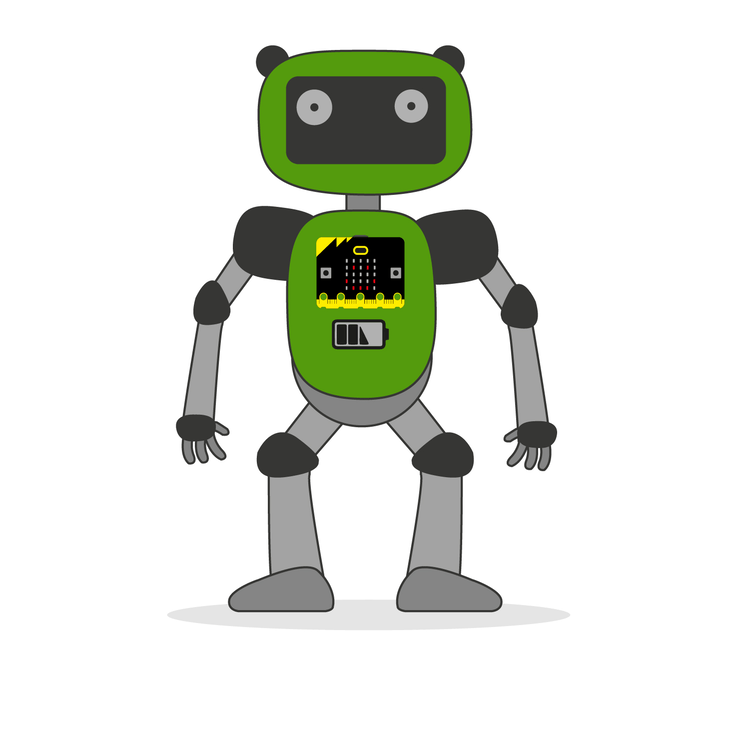
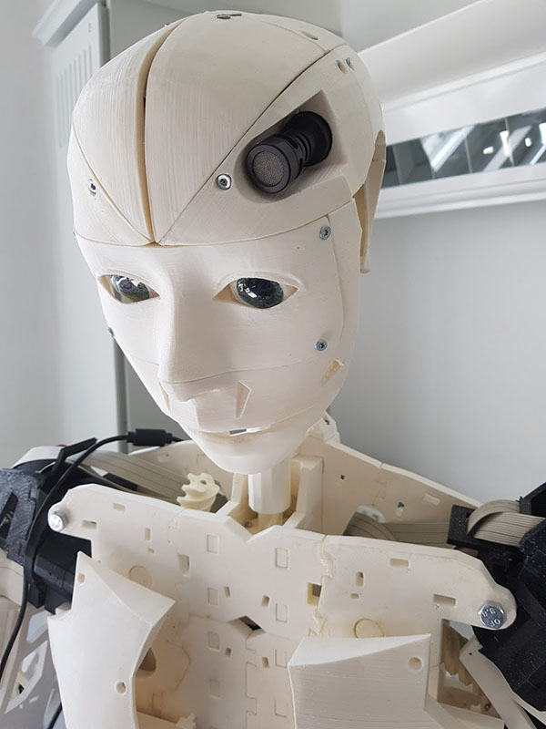

Diccionario
Antigüedad

Autómata

Ciencia ficción
Circuitos

Código abierto

Frankenstein

Inteligencia artificial

Mary Shelley

Microcontrolador

Placa robótica

Robótica

1. SOS, nuestro robot necesita ayuda


¡Nuestro robot ha sufrido un accidente!
Hay que realizar un programa para comprobar que sigue vivo y que todos sus circuitos continúan funcionando bien. ¿Nos ayudas? ¡Ánimo, te necesitamos!
 Definición:
Definición:
Plural de circuito. Conjunto de componentes eléctricos que realizan una función.
Ejemplo:
Para encender una bombilla tenemos que realizar un circuito formado por una pila, al menos una bombilla, un interruptor y cables.
2. El sueño de crear vida artificial

Uno de los grandes sueños del ser humano ha sido el de dotar de vida a las máquinas.Ya en la antigüedad los griegos fabricaron los primeros autómatas, algunos con la capacidad para moverse por sí mismos e imitar las acciones de un ser vivo.
La ciencia ficción también ha tratado este tema. En 1818 Mary Shelley escribió en la novela “Frankenstein” sobre el sueño de crear vida de forma artificial.
En la actualidad, los últimos avances en robótica e inteligencia artificial nos acercan cada día más a este sueño de crear vida de forma artificial.
En esta tarea nos enfrentamos al reto de dar vida a nuestra placa robótica, ¿te atreves?
 Definición:
Definición:
Hace referencia a algo que ocurrió hace mucho tiempo.
Ejemplo:
Ya en la antigüedad los humanos construían grandes edificios como el Partenón o las pirámides.
 Definición:
Definición:
Máquina capaz de funcionar de forma autónoma.
Ejemplo:
El autómata realiza las tareas sin necesidad de ayuda humana.
 Definición:
Definición:
Género literario o cinematográfico que trata sobre los previsibles avances científicos o tecnológicos y sus posibles consecuencias.
Ejemplo:
La novela Frankenstein está considerada como el primer libro del género ciencia ficción.
 Definición:
Definición:
Escritora reconocida principalmente por ser la autora de la novela gótica Frankenstein.
Ejemplo:
Mary Shelley fue una de las primeras escritoras de ciencia ficción.
 Definición:
Definición:
Novela publicada el 1 de enero de 1818 y considerada la primera novela de ciencia ficción, el texto habla de temas tales como la moral científica, y la creación y destrucción de la vida.
Ejemplo:
Frankenstein es una mezcla entre un monstruo y un humano.
 Definición:
Definición:
Es la rama de la ciencia y la tecnología, que se ocupa del diseño, construcción y aplicación de los robots.
Ejemplo:
La robótica es un campo que está evolucionando mucho en los últimos años.
 Definición:
Definición:
La inteligencia artificial es la inteligencia expresada por las máquinas.
Ejemplo:
Los robots más modernos usan inteligencia artificial para tomar decisiones.
 Definición:
Definición:
Es una superficie formada por pistas de material conductor sobre una base no conductora. Se utiliza para conectar eléctricamente un conjunto de componentes electrónicos.
Ejemplo:
Microbit es una placa robótica de pequeño tamaño.
Lectura facilitada
Dar vida a las máquinas es un reto del ser humano.
En la Antigüedad los griegos fabricaron los primeros autómatas.
Mary Shelley escribió en 1818 el libro de Frankenstein. En el libro de Frankenstein se le da vida a una persona en un laboratorio.
Los estudios en robótica intentan crear vida en laboratorios.
En esta tarea intentaremos dar vida a nuestra placa robótica, ¿te atreves?
Definición:
Máquina capaz de funcionar sin ayuda humana.
Ejemplo:
El autómata hizo la tarea sin ayuda humana.
Definición:
Mujer que escribio el libro de Frankenstein.
Ejemplo:
Mary Shelley escribió Frankenstein.
Definición:
Novela en la que crean a un hombre.
Ejemplo:
Frankenstein es una mezcla entre un monstruo y un humano.
 Definición:
Definición:
Lugar donde se investiga y hacen experimentos.
Ejemplo:
En el laboratorio hacen experimentos.
Definición:
Es la ciencia que se ocupa del diseño y construcción de los robots.
Ejemplo:
La robótica está evolucionando mucho en los últimos años.
3. Antes de empezar nos preguntamos

Sería interesante que antes de empezar nos hiciéramos algunas preguntas. No tienes que responder a todas, pero te invitamos a pensar un poco sobre ellas:
4. ¿Qué pueden hacer los robots?
Robots que pueden bailar
Robots capaces de medir radiación en centrales nucleares
Robots que hacen música
Robots que dibujan
Clasificar productos en almacenes
Jugar al tenis de mesa
Ayudan a operar
Conducir por ti
Acompañar a nuestros mayores
Servir de prótesis inteligentes para recuperar movilidad (anuncio)
Construyen edificios
Cocinar cualquier receta
5. Qué vas a aprender mientras ayudas a tu robot
- Qué es un microcontrolador y cómo funciona.
- La importancia de los microcontroladores, en la sociedad actual.
- Qué componentes tiene nuestra placa robótica y cómo programarla.
- Qué es el ¡Hola mundo! y cómo hacer un programa de chequeo inicial de un robot.
- Las ventajas de las tecnologías de código abierto.
- ¿Qué son los robots y cómo interactúan con su entorno?
 Definición:
Definición:
Un microcontrolador es un circuito integrado programable, capaz de ejecutar las órdenes grabadas en su memoria.
Ejemplo:
La placa Microbit lleva un microcontrolador para controlar sus funciones.
 Definición:
Definición:
Es un modelo de desarrollo basado en la colaboración abierta y el uso gratuito.
Ejemplo:
Muchos de los programas que usamos como Scratch son de código abierto.